Last updated: 2023-02-25
Checks: 7 0
Knit directory: multiclass_AUC/
This reproducible R Markdown analysis was created with workflowr (version 1.7.0). The Checks tab describes the reproducibility checks that were applied when the results were created. The Past versions tab lists the development history.
Great! Since the R Markdown file has been committed to the Git repository, you know the exact version of the code that produced these results.
Great job! The global environment was empty. Objects defined in the global environment can affect the analysis in your R Markdown file in unknown ways. For reproduciblity it’s best to always run the code in an empty environment.
The command set.seed(20230112) was run prior to running
the code in the R Markdown file. Setting a seed ensures that any results
that rely on randomness, e.g. subsampling or permutations, are
reproducible.
Great job! Recording the operating system, R version, and package versions is critical for reproducibility.
Nice! There were no cached chunks for this analysis, so you can be confident that you successfully produced the results during this run.
Great job! Using relative paths to the files within your workflowr project makes it easier to run your code on other machines.
Great! You are using Git for version control. Tracking code development and connecting the code version to the results is critical for reproducibility.
The results in this page were generated with repository version 17ee60b. See the Past versions tab to see a history of the changes made to the R Markdown and HTML files.
Note that you need to be careful to ensure that all relevant files for
the analysis have been committed to Git prior to generating the results
(you can use wflow_publish or
wflow_git_commit). workflowr only checks the R Markdown
file, but you know if there are other scripts or data files that it
depends on. Below is the status of the Git repository when the results
were generated:
Ignored files:
Ignored: .Rhistory
Ignored: .Rproj.user/
Ignored: renv/library/
Ignored: renv/sandbox/
Ignored: renv/staging/
Note that any generated files, e.g. HTML, png, CSS, etc., are not included in this status report because it is ok for generated content to have uncommitted changes.
These are the previous versions of the repository in which changes were
made to the R Markdown
(analysis/06_class_pair_synthetic_score.Rmd) and HTML
(docs/06_class_pair_synthetic_score.html) files. If you’ve
configured a remote Git repository (see ?wflow_git_remote),
click on the hyperlinks in the table below to view the files as they
were in that past version.
| File | Version | Author | Date | Message |
|---|---|---|---|---|
| Rmd | 17ee60b | Ross Gayler | 2023-02-25 | Publish notebook 06 |
| Rmd | 0451805 | Ross Gayler | 2023-02-24 | end 2023-02-24 |
Read the saved example data.
d_scores <- readRDS(file = here::here("output", "d_scores.RDS")) |>
# convert case, class_id and score_id to integer factors for safety & better label order
dplyr::mutate(
case = forcats::as_factor(case),
class_id = forcats::as_factor(class_id),
score_id = forcats::as_factor(score_id)
)Classic SDT has two classes discriminated by a single score. Multiclass classification typically has as many scores per observation as there are classes, with the observation being predicted as belonging to the class with the highest score. This leads to difficulty in mapping the multiclass scenario into the SDT conceptual framework.
For each case characterised by the vector of observations \(x\) there should be a score (\(s_i(x)\)) for each class \(i\). Normatively, each class score (\(s_i(x)\)) should be some fixed monotonic function of the probability (\(p( class = i \mid x)\)) of the observation belonging to class \(i\). In principle, we can transform the score \(s_i(x)\) to the estimated probability \(\hat{p}_i(class = i \mid x)\) and use that estimated probability as the score. Note that I am explicitly stating that \(\hat{p}_i(x)\) is derived from \(s_i(x)\). The literature tends to be somewhat sketchy about this and unclear as to whether the probabilities are derived from scores of the data or are somehow Platonic ideal probabilities that exist independent of the scores.
The Hand and Till (2001) multiclass AUC approach works by breaking the multiclass problem into all pairs of classes to be discriminated, calculating a discriminability measure (AUC) for each pair of classes, then averaging that pairwise discriminability across the set of class pairs. For each pair of classes, \(i\) and \(j\), they calculate the AUC for discriminating the classes separately by \(s_i(x)\) and \(s_j(x)\), then average those two AUC values to get the AUC for the class pair. I believe that this approach, while useful, is not correct because the use of the scores in the AUC calculation does not correspond to the way they are used in the classifier. In classic SDT a single score is compared to a fixed threshold. This corresponds to the way the scores are used in the Hand and Till calculation. However, the classifiers we are interested in take two scores per case (one for each of the two classes in the pair) and assign the case to the class with the higher score. That is, the classification algorithm compares two scores to each other rather than one score to a fixed threshold.
Another perspective on this point is that the AUC calculation conceptually involves independently selecting one case at random from each of the two classes and calculating the score for each case. The scores are independent in that they are based on separate cases. In contrast, the classifier as implemented takes one case (from some class) and calculates both scores from the same case. The scores are not independent because they are calculated from the same case.
It can be demonstrated that considering the two scores in isolation does not guarantee a good assessment of the performance of the classifier. Assume that each of the class scores is reasonably discriminating of class membership. This ensures that the AUC calculated by the Hand and Till method is reasonably high. However, it is possible for the two class scores to be calibrated differently to the outcome. (We observed this empirically in an earlier notebook.) In the extreme case there could be no overlap between the ranges of the two scores, so that the score for one class was always greater than the score for the other class, regardless of the true class for the case. This would mean that the classifier, as implemented, was useless for discriminating the classes, even though each class score was reasonably discriminating.
We need some way of assessing the performance of the classifier as implemented (i.e. depending on the comparison of the two class scores). We attempt to do this by creating a synthetic score that captures the relationship between the two class scores and allows us to apply the classic SDT conceptual model of, for each case, comparing the single synthetic score to a fixed threshold. The constraints are:
There is also another constraint (ability to simulate response bias) that we will deal with in detail in a later notebook.
The objective of this notebook is to make some empirical attempts at creating a synthetic score to illustrate the issues that arise. This is not intended as an exhaustive analysis of the datasets, so the datasets and classes to analyse will be chosen for convenience.
Analysis is more technically difficult with smaller numbers of cases, so choose UCR_14 rather than UCR_48. Analysis is more technically difficult with greater discriminability, so choose MINIROCKET rather than HDC_MINIROCKET.
Choose classes 1 and 3 because an earlier notebook showed that these classes had lower separability compared to other pairs of classes. Also, it looked like class score 1 and class score 3 behaved differently, which is interesting.
Restrict the data to only those cases belonging to class 1 or class
3. Then reformat the data so that there is one row per case with both
class scores present in the same row. Also, create the score difference
(score_diff) as an obvious candidate for a synthetic
score.
d <- d_scores |>
dplyr::filter(dataset == "UCR_14" & model == "MINIROCKET") |>
dplyr::filter(class_id %in% c(1, 3) & score_id %in% c(1, 3)) |>
tidyr::pivot_wider(
id_cols = c(dataset, model, case, class_id),
names_from = score_id,
values_from = score_val,
names_prefix = "score_"
) |>
dplyr::mutate(score_diff = score_1 - score_3)
summary(d) dataset model case class_id
Length:685 Length:685 1 : 1 1 :343
Class :character Class :character 2 : 1 3 :342
Mode :character Mode :character 4 : 1 0 : 0
5 : 1 2 : 0
7 : 1 4 : 0
8 : 1 5 : 0
(Other):679 (Other): 0
score_1 score_3 score_diff
Min. :-1.36849 Min. :-1.5579 Min. :-2.3371
1st Qu.:-0.54931 1st Qu.:-0.9123 1st Qu.:-0.9598
Median :-0.06212 Median :-0.5472 Median : 0.4780
Mean :-0.06124 Mean :-0.2890 Mean : 0.2277
3rd Qu.: 0.48664 3rd Qu.: 0.4646 3rd Qu.: 1.3211
Max. : 1.44485 Max. : 1.1561 Max. : 2.9160
First look at each of the two class scores (score_1 and
score_3) as predictors in isolation. This parallels their
use in Hand and Till (2001). Then look at
some potential synthetic scores.
score_1Look at score_1 as a predictor of class_id.
This includes calculating the AUC of the score as a predictor of the
class, using the equivalence to the Mann-Whitney-Wilcoxon test statistic
noted in Hand and Till (2001).
Look at the distribution of score_1 by
class_id.
n_pairs <- d$class_id |> as.integer() |> table() |> prod() # get the number of pairs of class_i,class_j cases
auc <- wilcox.test(d$score_1[d$class_id == 1], d$score_1[d$class_id == 3])$statistic / n_pairs
ggplot(d) +
geom_density(aes(x = score_1, fill = class_id), alpha = 0.5) +
labs(
title = "UCR_14 MINIROCKET, Classes 1 & 3",
subtitle = glue::glue("Score 1, AUC = {round(auc, 3)}")
)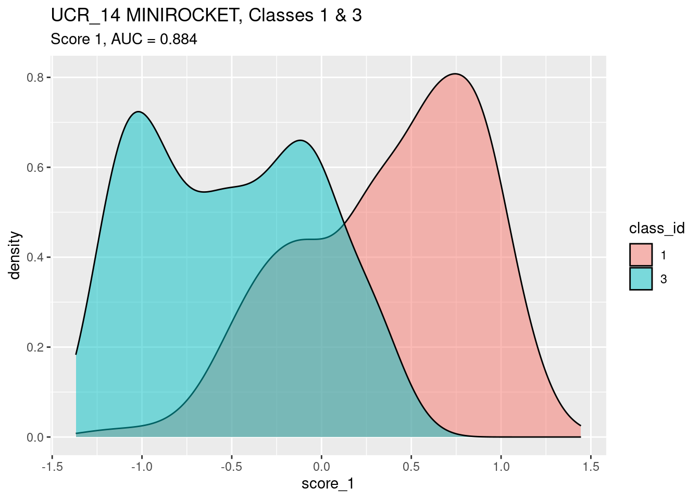
score_1.score_1.Look at the calibration of score_1 as a predictor of
class_id.
Fit a smooth calibration curve.
fit <- mgcv::gam(class_id == 1 ~ s(score_1) + 1, family = binomial(), data = d)
summary(fit)
Family: binomial
Link function: logit
Formula:
class_id == 1 ~ s(score_1) + 1
Parametric coefficients:
Estimate Std. Error z value Pr(>|z|)
(Intercept) 0.7061 0.3374 2.093 0.0363 *
---
Signif. codes: 0 '***' 0.001 '**' 0.01 '*' 0.05 '.' 0.1 ' ' 1
Approximate significance of smooth terms:
edf Ref.df Chi.sq p-value
s(score_1) 4.92 5.889 112.1 <2e-16 ***
---
Signif. codes: 0 '***' 0.001 '**' 0.01 '*' 0.05 '.' 0.1 ' ' 1
R-sq.(adj) = 0.466 Deviance explained = 43.3%
UBRE = -0.19686 Scale est. = 1 n = 685plot(fit)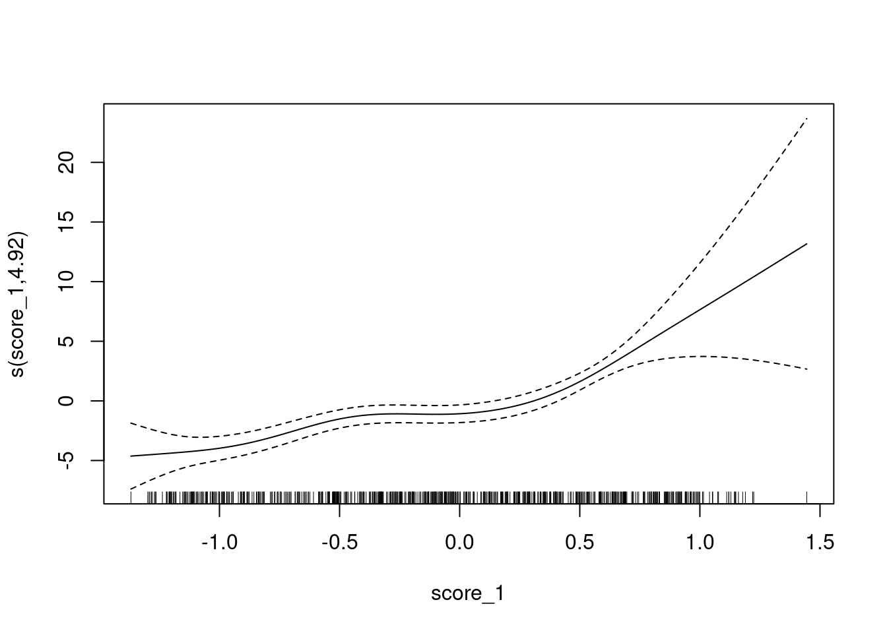
The y axis is scaled as log-odds of being class 1 versus class 3.
Fit a linear calibration as being close enough for current purposes.
fit <- mgcv::gam(class_id == 1 ~ score_1 + 1, family = binomial(), data = d)
summary(fit)
Family: binomial
Link function: logit
Formula:
class_id == 1 ~ score_1 + 1
Parametric coefficients:
Estimate Std. Error z value Pr(>|z|)
(Intercept) 0.1805 0.1045 1.726 0.0843 .
score_1 3.2015 0.2349 13.631 <2e-16 ***
---
Signif. codes: 0 '***' 0.001 '**' 0.01 '*' 0.05 '.' 0.1 ' ' 1
R-sq.(adj) = 0.438 Deviance explained = 39.2%
UBRE = -0.15115 Scale est. = 1 n = 685score_3Look at score_3 as a predictor of
class_id.
auc <- wilcox.test(d$score_3[d$class_id == 3], d$score_3[d$class_id == 1])$statistic / n_pairs
ggplot(d) +
geom_density(aes(x = score_3, fill = class_id), alpha = 0.5) +
labs(
title = "UCR_14 MINIROCKET, Classes 1 & 3",
subtitle = glue::glue("Score 3, AUC = {round(auc, 3)}")
)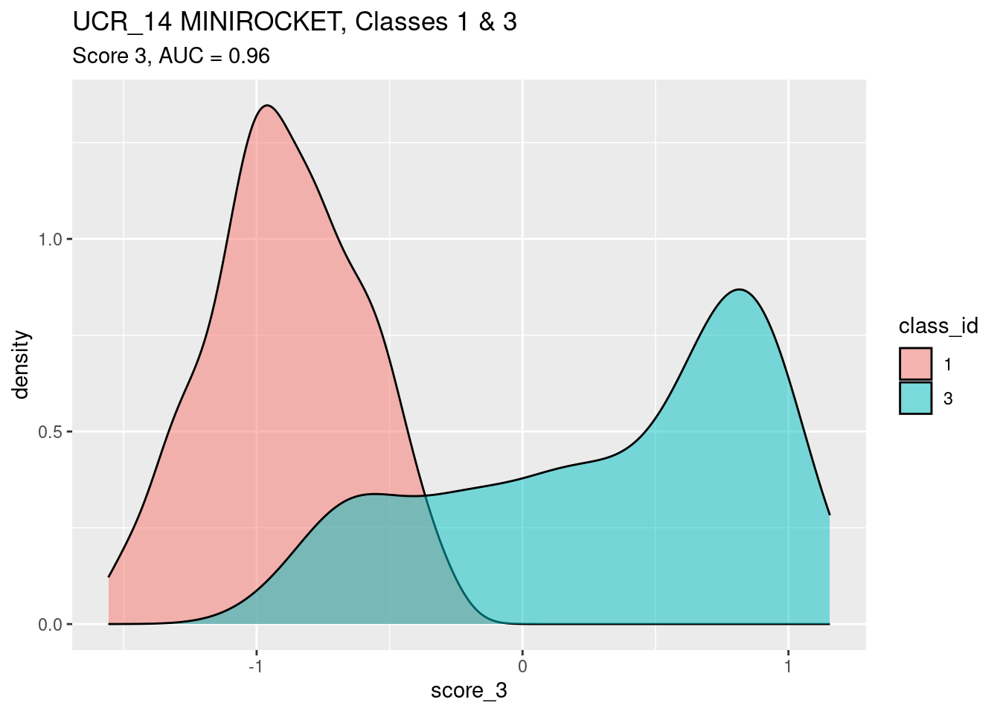
score_3.Look at the calibration of score_3 as a predictor of
class_id.
Fit a smooth calibration curve.
fit <- mgcv::gam(class_id == 1 ~ s(score_3) + 1, family = binomial(), data = d)
summary(fit)
Family: binomial
Link function: logit
Formula:
class_id == 1 ~ s(score_3) + 1
Parametric coefficients:
Estimate Std. Error z value Pr(>|z|)
(Intercept) -5.523 4.881 -1.132 0.258
Approximate significance of smooth terms:
edf Ref.df Chi.sq p-value
s(score_3) 3.639 4.26 59.84 <2e-16 ***
---
Signif. codes: 0 '***' 0.001 '**' 0.01 '*' 0.05 '.' 0.1 ' ' 1
R-sq.(adj) = 0.711 Deviance explained = 68.1%
UBRE = -0.54362 Scale est. = 1 n = 685plot(fit)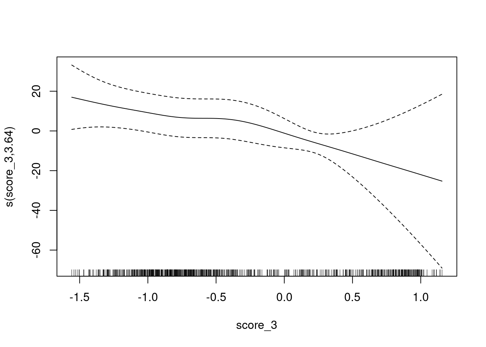
The y axis is still scaled as log-odds of being class 1 versus class 3 (rather than class 3 versus class 1). It is convenient to do this because later we will be using both scores to predict one outcome, so the outcome may as well be the same for all models.
Fit a linear calibration as being close enough for current purposes.
fit <- mgcv::gam(class_id == 1 ~ score_3 + 1, family = binomial(), data = d)
summary(fit)
Family: binomial
Link function: logit
Formula:
class_id == 1 ~ score_3 + 1
Parametric coefficients:
Estimate Std. Error z value Pr(>|z|)
(Intercept) -2.8959 0.3499 -8.277 <2e-16 ***
score_3 -6.1673 0.5583 -11.047 <2e-16 ***
---
Signif. codes: 0 '***' 0.001 '**' 0.01 '*' 0.05 '.' 0.1 ' ' 1
R-sq.(adj) = 0.695 Deviance explained = 65.9%
UBRE = -0.52156 Scale est. = 1 n = 685score_diffThe difference between the two scores looks like a reasonable attempt at a synthetic score. The sign of the difference indicates which score (out of score 1 and score 3) is greater. Comparing the score difference to a fixed threshold of zero leads to the same assigned class obtained by assigning the class corresponding to the larger score in the classifier as implemented.
Look at score_diff as a predictor of
class_id.
auc <- wilcox.test(d$score_diff[d$class_id == 1], d$score_diff[d$class_id == 3])$statistic / n_pairs
ggplot(d) +
geom_vline(xintercept = 0) +
geom_density(aes(x = score_diff, fill = class_id), alpha = 0.5) +
labs(
title = "UCR_14 MINIROCKET, Classes 1 & 3",
subtitle = glue::glue("Score score_diff, AUC = {round(auc, 3)}")
)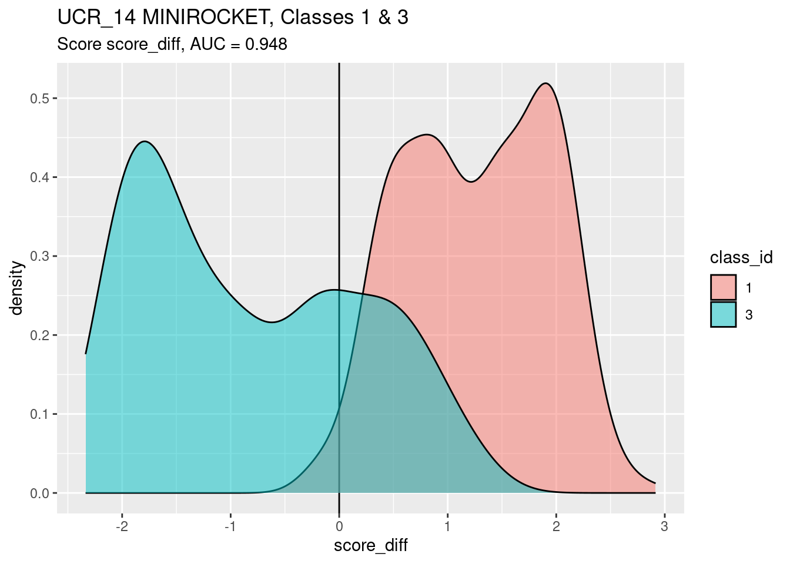
The calculated AUC accurately reflects the ability of
score_diff to discriminate classes 1 and 3. However, I am
not convinced that score_diff is the best synthetic score
to summarise the behaviour of the classifier as implemented, because I
suspect that the score difference does not accurately capture the
behaviour of the classifier under varying response bias.
score_diff is a good discriminator of classscore_diff is a better discriminator of classes 1 and 3
than score 1.score_diff is a slightly worse discriminator of classes
1 and 3 than score 3.
Look at the calibration of score_diff as a predictor of
class_id.
Fit a smooth calibration curve.
fit <- mgcv::gam(class_id == 1 ~ s(score_diff) + 1, family = binomial(), data = d)
summary(fit)
Family: binomial
Link function: logit
Formula:
class_id == 1 ~ s(score_diff) + 1
Parametric coefficients:
Estimate Std. Error z value Pr(>|z|)
(Intercept) -1.765 1.727 -1.022 0.307
Approximate significance of smooth terms:
edf Ref.df Chi.sq p-value
s(score_diff) 3.681 4.435 76.23 <2e-16 ***
---
Signif. codes: 0 '***' 0.001 '**' 0.01 '*' 0.05 '.' 0.1 ' ' 1
R-sq.(adj) = 0.647 Deviance explained = 62.2%
UBRE = -0.46178 Scale est. = 1 n = 685plot(fit)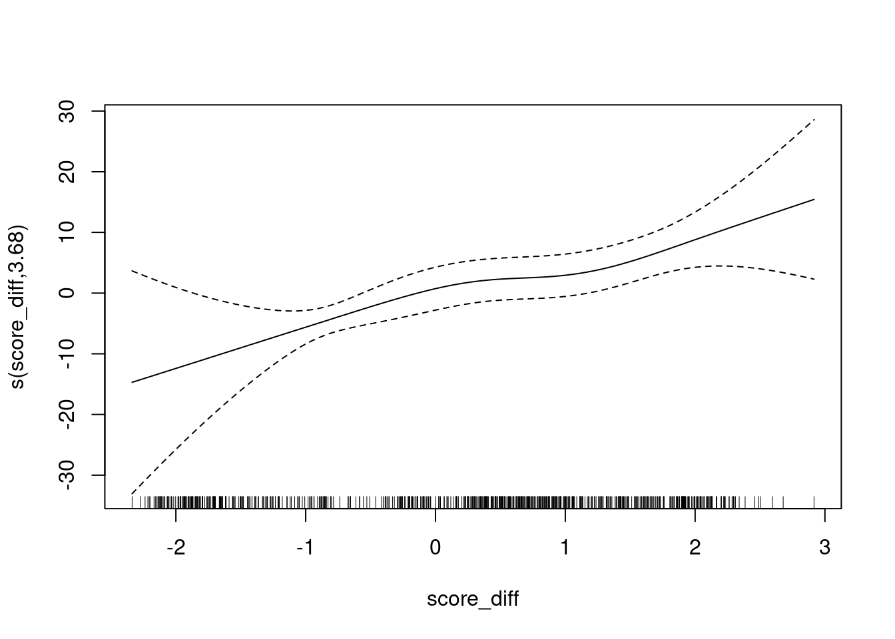
The y axis is scaled as log-odds of being class 1 versus class 3.
Fit a linear calibration as being close enough for current purposes.
fit <- mgcv::gam(class_id == 1 ~ score_diff + 1, family = binomial(), data = d)
summary(fit)
Family: binomial
Link function: logit
Formula:
class_id == 1 ~ score_diff + 1
Parametric coefficients:
Estimate Std. Error z value Pr(>|z|)
(Intercept) -1.2032 0.1842 -6.533 6.43e-11 ***
score_diff 2.9417 0.2535 11.606 < 2e-16 ***
---
Signif. codes: 0 '***' 0.001 '**' 0.01 '*' 0.05 '.' 0.1 ' ' 1
R-sq.(adj) = 0.637 Deviance explained = 60.5%
UBRE = -0.44604 Scale est. = 1 n = 685score_1 + score_3In this subsection I will construct a new synthetic score that is an optimal linear composite of score 1 and score 3. I will use logistic regression to find the weighting of the two scores that best predicts the true class. Note that this synthetic score is not guaranteed to emulate the classifier as implemented at the current response bias. The only weighted sum for which that is true is the score difference (weights of +1 and -1, and isomorphic transforms). The reason for constructing this score is to investigate whether it is possible to combine the class scores in a way which is more predictive than the individual scores and the classifier as implemented.
Fit a model to predict the true class from a linear composite of score 1 and score 3.
fit <- mgcv::gam(class_id == 1 ~ score_1 + score_3 + 1, family = binomial(), data = d)
summary(fit)
Family: binomial
Link function: logit
Formula:
class_id == 1 ~ score_1 + score_3 + 1
Parametric coefficients:
Estimate Std. Error z value Pr(>|z|)
(Intercept) -2.7370 0.3554 -7.700 1.36e-14 ***
score_1 0.8903 0.3901 2.282 0.0225 *
score_3 -5.7334 0.5805 -9.877 < 2e-16 ***
---
Signif. codes: 0 '***' 0.001 '**' 0.01 '*' 0.05 '.' 0.1 ' ' 1
R-sq.(adj) = 0.698 Deviance explained = 66.5%
UBRE = -0.52627 Scale est. = 1 n = 685Add the synthetic score to the data frame.
d$score_sum <- predict(fit)
summary(d) dataset model case class_id
Length:685 Length:685 1 : 1 1 :343
Class :character Class :character 2 : 1 3 :342
Mode :character Mode :character 4 : 1 0 : 0
5 : 1 2 : 0
7 : 1 4 : 0
8 : 1 5 : 0
(Other):679 (Other): 0
score_1 score_3 score_diff score_sum
Min. :-1.36849 Min. :-1.5579 Min. :-2.3371 Min. :-10.4169
1st Qu.:-0.54931 1st Qu.:-0.9123 1st Qu.:-0.9598 1st Qu.: -5.8154
Median :-0.06212 Median :-0.5472 Median : 0.4780 Median : 0.4405
Mean :-0.06124 Mean :-0.2890 Mean : 0.2277 Mean : -1.1346
3rd Qu.: 0.48664 3rd Qu.: 0.4646 3rd Qu.: 1.3211 3rd Qu.: 2.8014
Max. : 1.44485 Max. : 1.1561 Max. : 2.9160 Max. : 7.0613
Look at score_sum as a predictor of
class_id.
auc <- wilcox.test(d$score_sum[d$class_id == 1], d$score_sum[d$class_id == 3])$statistic / n_pairs
ggplot(d) +
geom_vline(xintercept = 0) +
geom_density(aes(x = score_sum, fill = class_id), alpha = 0.5) +
labs(
title = "UCR_14 MINIROCKET, Classes 1 & 3",
subtitle = glue::glue("Score score_sum, AUC = {round(auc, 3)}")
)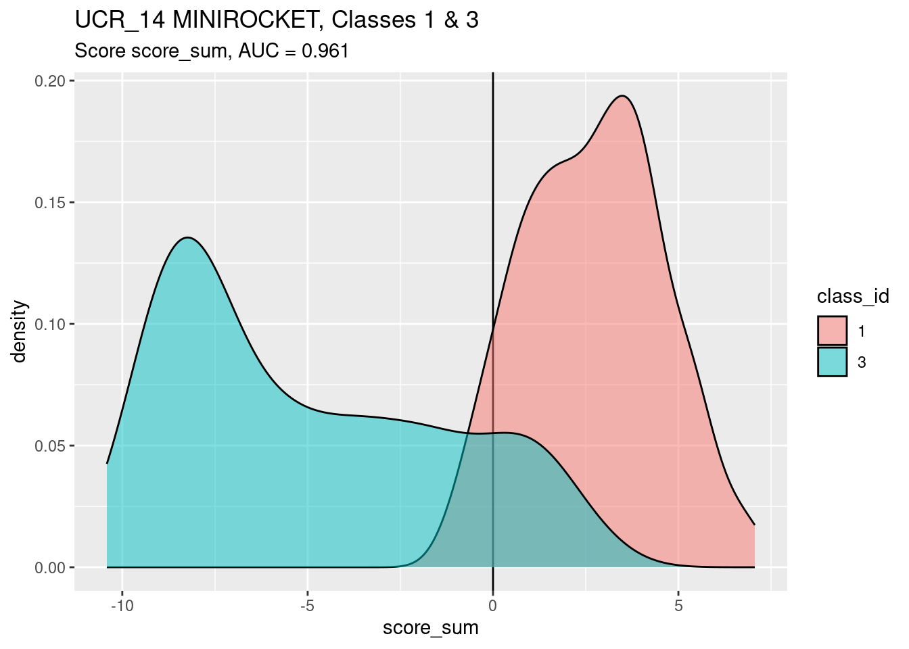
score_sum is a slightly better discriminator (by AUC)
of classes 1 and 3 than score 3.Look at the calibration of score_sum as a predictor of
class_id.
Fit a smooth calibration curve.
fit <- mgcv::gam(class_id == 1 ~ s(score_sum) + 1, family = binomial(), data = d)
summary(fit)
Family: binomial
Link function: logit
Formula:
class_id == 1 ~ s(score_sum) + 1
Parametric coefficients:
Estimate Std. Error z value Pr(>|z|)
(Intercept) -6.854 6.600 -1.038 0.299
Approximate significance of smooth terms:
edf Ref.df Chi.sq p-value
s(score_sum) 3.739 4.3 51.56 <2e-16 ***
---
Signif. codes: 0 '***' 0.001 '**' 0.01 '*' 0.05 '.' 0.1 ' ' 1
R-sq.(adj) = 0.714 Deviance explained = 68.8%
UBRE = -0.55334 Scale est. = 1 n = 685plot(fit)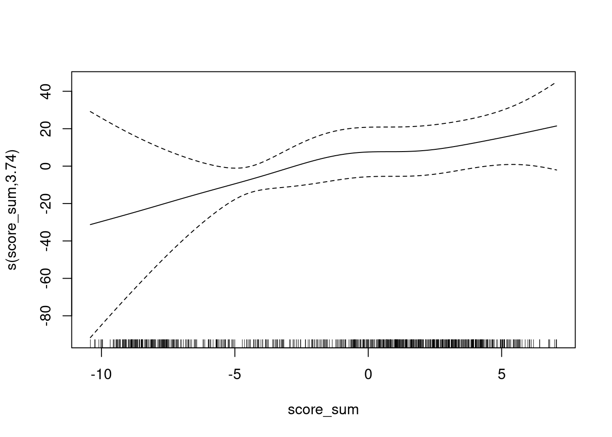
The y axis is scaled as log-odds of being class 1 versus class 3.
Fit a linear calibration as being close enough for current purposes.
fit <- mgcv::gam(class_id == 1 ~ score_sum + 1, family = binomial(), data = d)
summary(fit)
Family: binomial
Link function: logit
Formula:
class_id == 1 ~ score_sum + 1
Parametric coefficients:
Estimate Std. Error z value Pr(>|z|)
(Intercept) -8.842e-15 1.525e-01 0.0 1
score_sum 1.000e+00 9.171e-02 10.9 <2e-16 ***
---
Signif. codes: 0 '***' 0.001 '**' 0.01 '*' 0.05 '.' 0.1 ' ' 1
R-sq.(adj) = 0.698 Deviance explained = 66.5%
UBRE = -0.52918 Scale est. = 1 n = 685s(score_1, score_3)In this subsection I will construct a new synthetic score that is a smooth function of the joint values of score 1 and score 3. This will be even more predictive of the true class than the linear composite of the scores if there is an interaction present. The reason for constructing this score is to investigate whether it is possible to combine the class scores in a way which is more predictive than the classifier as implemented.
Fit a model to predict the true class from a smooth joint function of score 1 and score 3.
fit <- mgcv::gam(class_id == 1 ~ s(score_1, score_3) + 1, family = binomial(), data = d)
summary(fit)
Family: binomial
Link function: logit
Formula:
class_id == 1 ~ s(score_1, score_3) + 1
Parametric coefficients:
Estimate Std. Error z value Pr(>|z|)
(Intercept) -3.516 5.183 -0.678 0.498
Approximate significance of smooth terms:
edf Ref.df Chi.sq p-value
s(score_1,score_3) 14.09 16.51 54.3 8.16e-06 ***
---
Signif. codes: 0 '***' 0.001 '**' 0.01 '*' 0.05 '.' 0.1 ' ' 1
R-sq.(adj) = 0.748 Deviance explained = 73.3%
UBRE = -0.58612 Scale est. = 1 n = 685plot(fit)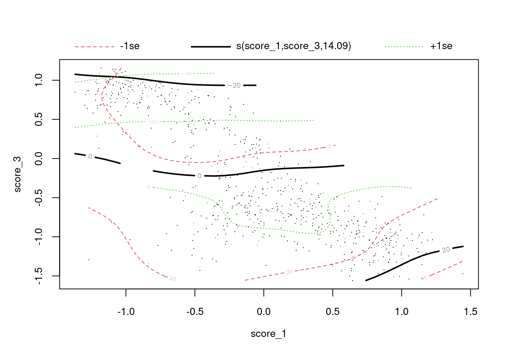
The plot shows the surface of log-odds of being class 1 versus class 3. The solid black lines are contours of the surface. The dashed red and green lines are confidence intervals around the contours. The dots are the cases.
Add the synthetic score to the data frame.
d$score_intx <- predict(fit)
summary(d) dataset model case class_id
Length:685 Length:685 1 : 1 1 :343
Class :character Class :character 2 : 1 3 :342
Mode :character Mode :character 4 : 1 0 : 0
5 : 1 2 : 0
7 : 1 4 : 0
8 : 1 5 : 0
(Other):679 (Other): 0
score_1 score_3 score_diff score_sum
Min. :-1.36849 Min. :-1.5579 Min. :-2.3371 Min. :-10.4169
1st Qu.:-0.54931 1st Qu.:-0.9123 1st Qu.:-0.9598 1st Qu.: -5.8154
Median :-0.06212 Median :-0.5472 Median : 0.4780 Median : 0.4405
Mean :-0.06124 Mean :-0.2890 Mean : 0.2277 Mean : -1.1346
3rd Qu.: 0.48664 3rd Qu.: 0.4646 3rd Qu.: 1.3211 3rd Qu.: 2.8014
Max. : 1.44485 Max. : 1.1561 Max. : 2.9160 Max. : 7.0613
score_intx
Min. :-24.9999
1st Qu.:-15.4271
Median : 0.3357
Mean : -3.5157
3rd Qu.: 3.7874
Max. : 21.2899
Look at score_intx as a predictor of
class_id.
auc <- wilcox.test(d$score_intx[d$class_id == 1], d$score_intx[d$class_id == 3])$statistic / n_pairs
ggplot(d) +
geom_vline(xintercept = 0) +
geom_density(aes(x = score_intx, fill = class_id), alpha = 0.5) +
labs(
title = "UCR_14 MINIROCKET, Classes 1 & 3",
subtitle = glue::glue("Score score_intx, AUC = {round(auc, 3)}")
)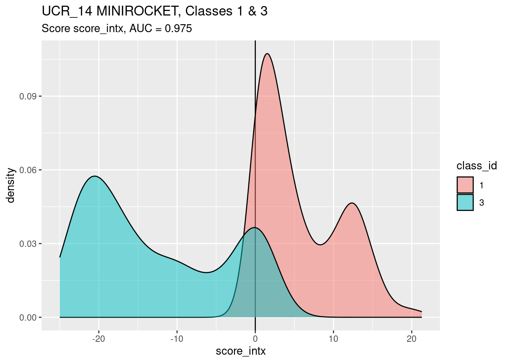
score_intx is a better discriminator (by AUC) of
classes 1 and 3 than the other scores examined.Look at the calibration of score_intx as a predictor of
class_id.
Fit a smooth calibration curve.
fit <- mgcv::gam(class_id == 1 ~ s(score_intx) + 1, family = binomial(), data = d)
summary(fit)
Family: binomial
Link function: logit
Formula:
class_id == 1 ~ s(score_intx) + 1
Parametric coefficients:
Estimate Std. Error z value Pr(>|z|)
(Intercept) -3.9604 0.6701 -5.91 3.42e-09 ***
---
Signif. codes: 0 '***' 0.001 '**' 0.01 '*' 0.05 '.' 0.1 ' ' 1
Approximate significance of smooth terms:
edf Ref.df Chi.sq p-value
s(score_intx) 1 1 48.55 <2e-16 ***
---
Signif. codes: 0 '***' 0.001 '**' 0.01 '*' 0.05 '.' 0.1 ' ' 1
R-sq.(adj) = 0.752 Deviance explained = 73.4%
UBRE = -0.62509 Scale est. = 1 n = 685plot(fit)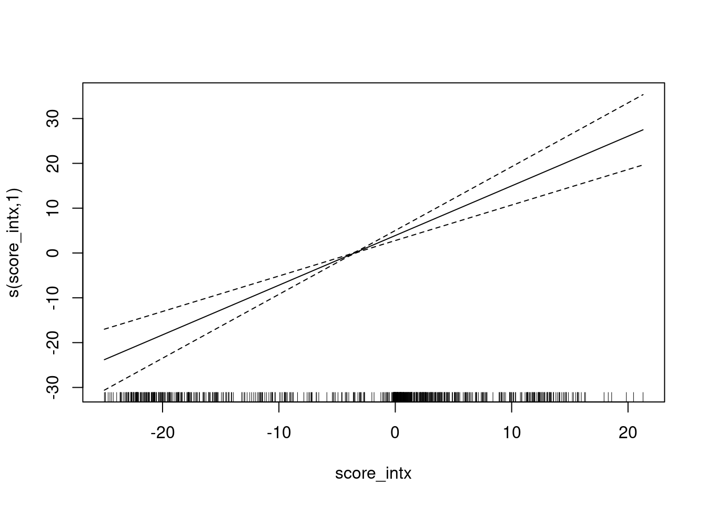
Fit a linear calibration as being close enough for current purposes.
fit <- mgcv::gam(class_id == 1 ~ score_intx + 1, family = binomial(), data = d)
summary(fit)
Family: binomial
Link function: logit
Formula:
class_id == 1 ~ score_intx + 1
Parametric coefficients:
Estimate Std. Error z value Pr(>|z|)
(Intercept) -0.06493 0.18045 -0.360 0.719
score_intx 1.10801 0.15787 7.018 2.24e-12 ***
---
Signif. codes: 0 '***' 0.001 '**' 0.01 '*' 0.05 '.' 0.1 ' ' 1
R-sq.(adj) = 0.752 Deviance explained = 73.4%
UBRE = -0.62509 Scale est. = 1 n = 685
sessionInfo()R version 4.2.2 Patched (2022-11-10 r83330)
Platform: x86_64-pc-linux-gnu (64-bit)
Running under: Ubuntu 22.04.2 LTS
Matrix products: default
BLAS: /usr/lib/x86_64-linux-gnu/blas/libblas.so.3.10.0
LAPACK: /usr/lib/x86_64-linux-gnu/lapack/liblapack.so.3.10.0
locale:
[1] LC_CTYPE=en_AU.UTF-8 LC_NUMERIC=C
[3] LC_TIME=en_AU.UTF-8 LC_COLLATE=en_AU.UTF-8
[5] LC_MONETARY=en_AU.UTF-8 LC_MESSAGES=en_AU.UTF-8
[7] LC_PAPER=en_AU.UTF-8 LC_NAME=C
[9] LC_ADDRESS=C LC_TELEPHONE=C
[11] LC_MEASUREMENT=en_AU.UTF-8 LC_IDENTIFICATION=C
attached base packages:
[1] stats graphics grDevices datasets utils methods base
other attached packages:
[1] mgcv_1.8-41 nlme_3.1-161 glue_1.6.2 ggplot2_3.4.0
[5] tidyr_1.3.0 forcats_0.5.2 dplyr_1.0.10 here_1.0.1
[9] workflowr_1.7.0
loaded via a namespace (and not attached):
[1] tidyselect_1.2.0 xfun_0.36 bslib_0.4.2 purrr_1.0.1
[5] splines_4.2.2 lattice_0.20-45 colorspace_2.1-0 vctrs_0.5.2
[9] generics_0.1.3 htmltools_0.5.4 yaml_2.3.7 utf8_1.2.2
[13] rlang_1.0.6 jquerylib_0.1.4 later_1.3.0 pillar_1.8.1
[17] withr_2.5.0 lifecycle_1.0.3 stringr_1.5.0 munsell_0.5.0
[21] gtable_0.3.1 evaluate_0.20 labeling_0.4.2 knitr_1.42
[25] callr_3.7.3 fastmap_1.1.0 httpuv_1.6.8 ps_1.7.2
[29] fansi_1.0.4 highr_0.10 Rcpp_1.0.10 renv_0.16.0
[33] promises_1.2.0.1 scales_1.2.1 cachem_1.0.6 jsonlite_1.8.4
[37] farver_2.1.1 fs_1.6.0 digest_0.6.31 stringi_1.7.12
[41] processx_3.8.0 getPass_0.2-2 rprojroot_2.0.3 grid_4.2.2
[45] cli_3.6.0 tools_4.2.2 magrittr_2.0.3 sass_0.4.5
[49] tibble_3.1.8 whisker_0.4.1 pkgconfig_2.0.3 ellipsis_0.3.2
[53] Matrix_1.5-3 rmarkdown_2.20 httr_1.4.4 rstudioapi_0.14
[57] R6_2.5.1 git2r_0.30.1 compiler_4.2.2